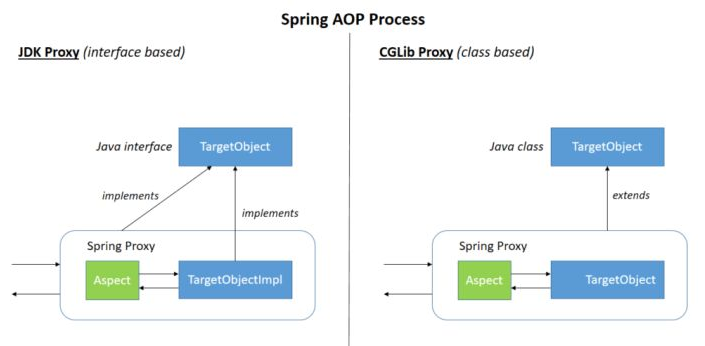

Welcome to yanliang's notes.
- 10. 简单介绍一下 bean;知道 Spring 的 bean 的作用域与生命周期吗?
- 11. Spring 中的事务传播行为了解吗?TransactionDefinition 接口中哪五个表示隔离级别的常量? - 事务传播行为 - 隔离级别
- 12. SpringMVC 原理了解吗?
- 13. Spring AOP IOC 实现原理
IOC AOP DI
https://gyl-coder.top/spring/spring-ioc-aop/
AOP(Aspect-Oriented Programming:面向切面编程)能够将那些与业务无关，却为业务模块所共同调用的逻辑或责任（例如事务处理、日志管理、权限控制等）封装起来，便于减少系统的重复代码，降低模块间的耦合度，并有利于未来的可拓展性和可维护性。
Spring AOP就是基于动态代理的，如果要代理的对象，实现了某个接口，那么Spring AOP会使用JDK Proxy，去创建代理对象，而对于没有实现接口的对象，就无法使用 JDK Proxy 去进行代理了，这时候Spring AOP会使用Cglib ，这时候Spring AOP会使用 Cglib 生成一个被代理对象的子类来作为代理，如下图所示：

当然你也可以使用 AspectJ ,Spring AOP 已经集成了AspectJ ，AspectJ 应该算的上是 Java 生态系统中最完整的 AOP 框架了。
使用 AOP 之后我们可以把一些通用功能抽象出来，在需要用到的地方直接使用即可，这样大大简化了代码量。我们需要增加新功能时也方便，这样也提高了系统扩展性。日志功能、事务管理等等场景都用到了 AOP 。
Spring AOP 和 AspectJ AOP 有什么区别？
Spring AOP 属于运行时增强，而 AspectJ 是编译时增强。 Spring AOP 基于代理(Proxying)，而 AspectJ 基于字节码操作(Bytecode Manipulation)。
Spring AOP 已经集成了 AspectJ ，AspectJ 应该算的上是 Java 生态系统中最完整的 AOP 框架了。AspectJ 相比于 Spring AOP 功能更加强大，但是 Spring AOP 相对来说更简单，
如果我们的切面比较少，那么两者性能差异不大。但是，当切面太多的话，最好选择 AspectJ ，它比Spring AOP 快很多。
@RestController vs @Controller
Controller 返回一个页面
单独使用 @Controller 不加 @ResponseBody的话一般使用在要返回一个视图的情况，这种情况属于比较传统的Spring MVC 的应用，对应于前后端不分离的情况。
@RestController 返回JSON 或 XML 形式数据
但@RestController只返回对象，对象数据直接以 JSON 或 XML 形式写入 HTTP 响应(Response)中，这种情况属于 RESTful Web服务，这也是目前日常开发所接触的最常用的情况（前后端分离）。
@Controller +@ResponseBody 返回JSON 或 XML 形式数据
如果你需要在Spring4之前开发 RESTful Web服务的话，你需要使用@Controller 并结合@ResponseBody注解，也就是说@Controller +@ResponseBody= @RestController（Spring 4 之后新加的注解）。
@ResponseBody注解的作用是将Controller的方法返回的对象通过适当的转换器转换为指定的格式之后，写入到HTTP 响应(Response)对象的 body 中，通常用来返回 JSON 或者 XML 数据，返回 JSON 数据的情况比较多。
Spring Bean
Spring Bean 中所说的作用域，在配置文件中即是“scope”
在面向对象程序设计中作用域一般指对象或变量之间的可见范围。
而在Spring容器中是指其创建的Bean对象相对于其他Bean对象的请求可见范围。
在Spring 容器当中，一共提供了5种作用域类型，在配置文件中，通过属性scope来设置bean的作用域范围。
- singleton : 唯一 bean 实例，Spring 中的 bean 默认都是单例的。
- prototype : 每次请求都会创建一个新的 bean 实例。
- request : 每一次HTTP请求都会产生一个新的bean，该bean仅在当前HTTP request内有效。
- session : 每一次HTTP请求都会产生一个新的 bean，该bean仅在当前 HTTP session 内有效。
- global-session： 全局session作用域，仅仅在基于portlet的web应用中才有意义，Spring5已经没有了。Portlet是能够生成语义代码(例如：HTML)片段的小型Java Web插件。它们基于portlet容器，可以像servlet一样处理HTTP请求。但是，与 servlet 不同，每个 portlet 都有不同的会话
Spring 中的单例 bean 的线程安全问题了解吗？
的确是存在安全问题的。因为，当多个线程操作同一个对象的时候，对这个对象的成员变量的写操作会存在线程安全问题。
但是，一般情况下，我们常用的 Controller、Service、Dao 这些 Bean 是无状态的。无状态的 Bean 不能保存数据，因此是线程安全的。
常见的有 2 种解决办法：
- 在类中定义一个
ThreadLocal成员变量，将需要的可变成员变量保存在ThreadLocal中（推荐的一种方式）。 - 改变 Bean 的作用域为 “prototype”：每次请求都会创建一个新的 bean 实例，自然不会存在线程安全问题。
@Component 和 @Bean 的区别是什么？
- 作用对象不同:
@Component注解作用于类，而@Bean注解作用于方法。 @Component通常是通过类路径扫描来自动侦测以及自动装配到Spring容器中（我们可以使用@ComponentScan注解定义要扫描的路径从中找出标识了需要装配的类自动装配到 Spring 的 bean 容器中）。@Bean注解通常是我们在标有该注解的方法中定义产生这个 bean,@Bean告诉了Spring这是某个类的示例，当我需要用它的时候还给我。@Bean注解比Component注解的自定义性更强，而且很多地方我们只能通过@Bean注解来注册bean。比如当我们引用第三方库中的类需要装配到Spring容器时，则只能通过@Bean来实现。
将一个类声明为Spring的 bean 的注解有哪些?
我们一般使用 @Autowired 注解自动装配 bean，要想把类标识成可用于 @Autowired 注解自动装配的 bean 的类,采用以下注解可实现：
@Component：通用的注解，可标注任意类为Spring组件。如果一个Bean不知道属于哪个层，可以使用@Component注解标注。@Repository: 对应持久层即 Dao 层，主要用于数据库相关操作。@Service: 对应服务层，主要涉及一些复杂的逻辑，需要用到 Dao层。@Controller: 对应 Spring MVC 控制层，主要用于接受用户请求并调用 Service 层返回数据给前端页面。
请详细描述 spring mvc 处理请求的全流程
spring 装载bean的流程
-